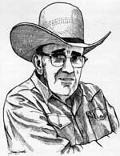

|
The Old Cowboy
 |
|
|---|---|
|
It was after one of these
steak fry evenings that the Urban Rancher experienced one of those magical
evenings which come so rarely. The guests had all departed, and it was just the
family left, and an old friend of the family by the name of Edgar Hyatt.
Edgar was one of the
few remaining old-timers, an old horse-shoer all bent and battered, with
an incredible memory. As we sat by the fire, he began to sing old cowboy
songs, and then he shared with us a special poem he had written ...
|
It was a magical night, the fire had burned low, And the guests had all gone to bed. There were five of us left -- our family of four And the battered old cowboy who looked half dead. His body was bent and mis-shapen by work, By years of shoeing horses, and by falls. We sat by the campfire, one warm summer night, Listening to the wind and the wild coyote calls. Then Edgar, the old cowboy, started singing his songs, In his monotone, gravelly voice so strange, Not the modern well known ones, but the really old ones That they sang years ago on the range. The wind whistled gently, the aspens leaves rustled, And the coyotes howled out their refrain. At once we were transported sixty years back, To when Edgar was a young cowboy again. After a while he grew quiet, and we savored the sounds That we'd heard ... a time beautiful and rare. Then he told us a poem about lion hunting and dogs, A personal thing he'd very rarely share. . . . He rumbled: "Come all you rough and tough hombres Draw up your chairs to the fire And we'll make big talk of lion hunting To see who rates as the biggest liar." "Some folks will tell you that hunting 'em is easy To run them and tree'em is a snap But pay them not much heed, little brother For that is all a big bunch of . . baloney." "You gotta be tough like the rawhide And you gotta be rough like a cob. And if you don't have these qualifications You had darn well better not start on the Job."
"I've run them in snow to my pockets |
Stained Glass by The Urban Rancher
Mountain Home Stained Glass
2148 McGraw Ranch Road
Estes Park, CO 80517
Mobile phone: 970-443-4536
E-mail:jaygrooters@frii.com
Copyright © 2009 Urban Rancher Publishing Revised - 17 September 2022